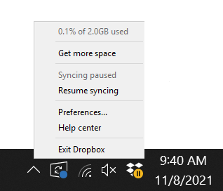
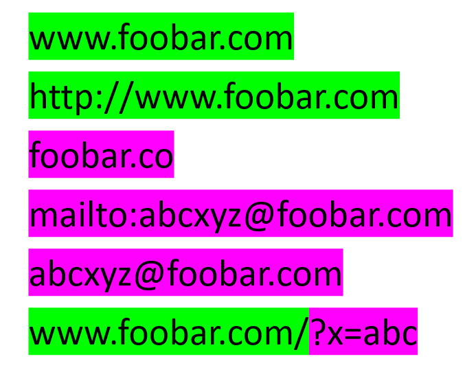
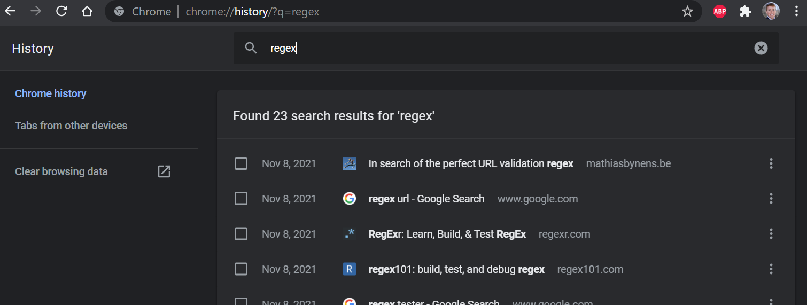

Associate Teaching Professor
Carnegie Mellon University
See the discussion of this post on Reddit, Lobste.rs, and Hacker News.
A few students came to me asking if I had any ideas for a software project that they could work on outside of class.
I explained an idea for a utility that I had been wanting: A desktop program that monitors my clipboard for URLs and logs them automatically.
This program would help me since I often have a hard time tracking down links that I send to people across all the different messenger apps I have installed. The idea was inspired by @tylerangert's tweet a few months ago.
The students then discussed how they would implement the idea and asked a few clarification questions, before one stated:
"This project will only take 2 hours."
After seeing the look on my face, another student said, "I think it would be more like 4 hours. I've never used the clipboard system call before."
I too run into the issue of underestimating the complexity of projects on first glance. I do it a lot actually.
I've started using it as a thought experiment exercise for project management. Whenever I think something is extremely simple, I walk through it step by step to uncover the complexities, design decisions, use cases, and potential features that I missed.
The goal isn't to fall into a feature rabbit hole, but rather to understand your assumptions about the project. If I don't do this exercise and I try to build it, then I will often run into two or three crux issues that I could have easily known about from the start. Don't go implement every feature idea you come up with from this exercise!
Let's go through the exercise with the clipboard URL logger.
Users generally don't like the idea of having something always running. Especially not when it monitors/logs something.
In that case it probably needs pause/resume capability. These could be actions easily accessible from the task bar icon. Also, how about an option to temporarily pause it for 5 minutes? If not, then I'll probably forget to resume it.
Make sure there is a visual indicator of when it is paused.
Since it is an application that runs in the background, many users would expect it to run on startup.
Design question: Combining the pausing feature and the run on startup feature, if I pause it then restart my computer, is it still paused?
What should the log file contain? A raw text file of URLs separated by newlines? That is the most straightforward way of solving the original problem (i.e., losing URLs I send people). It also makes it easy to search and grep.
Is there any other information that could be useful? Timestamps! Looking at a raw list of URLs probably wouldn't be particularly helpful when I think about it. (I tested the idea by exporting my browser history to a text file with only the URLs.) I want to be able to answer, "What was that website I sent last night?". Figuring out the best timestamp format is up for debate too. Maybe ISO 8601?
Since reading URLs are difficult and don't convey what is on the other side, you might want the website title and description. In fact, if you paste a link into your favorite messaging app, it usually displays that info along with an image from the page. That means the application needs to do a HTTP GET, parse the HTML, and extract the meta data.
I would also expect to know where the URL was copied from. I.e., whatever application is in focus when the clipboard is modified. It probably isn't feasible though to track everywhere it is pasted (maybe it is actually...).
We want people to be able to view the data using their favorite text editor, so raw text it is.
But how should it be formatted? A fixed number of lines per entry? Like:
http://austinhenley.com
Austin Z. Henley's Homepage
Copied from Microsoft Outlook
Sat Nov 06 2021 11:53
Or maybe it should be CSV? Well, URLs could have commas so we would need to be a bit more selective about the character we use as a separator. Decisions, decisions!
We haven't even talked about the core features yet! Windows and MacOS provided calls for accessing the clipboard, but when do you access the clipboard? Do you poll it every X seconds? Is there a event you can listen for? Are there cases when a copy event might be missed?
Then once you get access to the clipboard content, how do you identify URLs? Maybe you find a Stack Overflow question asking for a regex to find URLs. Does it match foobar.co? Or does it require "http" or "https" at the start? Do you do a HTTP GET to check that it exists? What instances will be false positives?
It would be expected for some users to want their log encrypted or at least obfuscated. This adds some additional steps for viewing or grepping the list, but it might be a worthy tradeoff.
I want the ability to exclude specific URLs. Users can provide a list of terms that if any one term is present in a URL, it is not logged. For example, maybe I would include "utk.edu" such that any work related links are omitted from my log.
Design question: How does the user create/edit/view this list? Is it a text file at specific path or does the application provide a settings UI that includes this?
Oh, here is a conundrum... is the exclude list viewable by anyone and stored in plaintext? That list may contain sensitive or private terms that you wouldn't see others to see! There needs to be a way for the exclude list to be private, such as making it write only or require a password. Each of which adds some additional design questions.
There are a plethora of design questions about how the log file is managed by the application. Will it continuously log to the same file? Should it create a new file after a certain period of time or after it reaches some size threshold?
Will it ever purge the history? Perhaps there can be a setting to delete the log(s) periodically, plus the ability to clear it at any given time.
We have been making the assumption that the user will view the log using other programs. But it could be annoying to navigate to the file and open it up. At least add a menu item that will open the log in the default text editor.
We could also take it a step further and provide a basic viewer with search. Much like Google Chrome's history view. That way each entry can be formatted, which would make it much easier to read than plaintext. Now we might as well add the ability to delete entries in the log too. You could get carried away adding features here, but I don't think users would use more advanced features in the viewer rather than using their favorite editor or command line tool.
Every modern app needs cloud functionality, right?! How much effort would it be to upload the log data to a variety of web services, such as Google Keep, Apple Notes, Dropbox, GitHub, etc.?
I'm a big fan of applications that support sync'ing across machines since I go back and forth between a Windows desktop and a MacBook Pro.
To do that, it probably needs user profiles with the ability to logout and change users even on single machine. That means the logic managing the log now needs to consider what user is logged in!
Ok, sync'ing is beyond our original scope...
Let's say all of our assumptions about what features users will want are true. Is the application ready to be released and used?
Is it easy to download, install, and configure? Are there any instructions or a demo video? Can someone learn to use it without explanation?
Has it been thoroughly tested? What operating systems are supported? What versions of those operating systems? Any dependencies? Does it play nicely with other software?
When can it fail? When it crashes, does it present a user readable error?
The list could continue on and on. Even implementing 20% of these features would make a fairly cool application! Then you have to get feedback and figure out if you built the right thing. Check out two of my other related posts:
So... still think it will only take 2 hours?